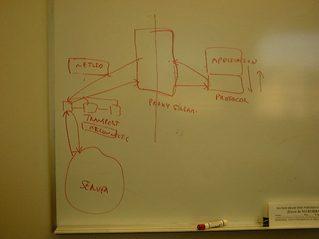
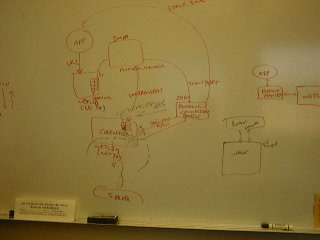

The New Pluggable Protocols Architecture
Provide a mechanism so that Mail and news protocols could be plugged into the Netlib with a loose integration. In Nav 4.x, mail and news protocols were very tightly integrated into Netlib (ie protocol related mail and news code was part of Netlib) and also Netlib was in the same thread as the mail and news's protocol code and the application code. In 5.x, Netlib is running in its own thread and Mail and News's application code would be in a separate thread (may be UI thread).
If Mail and News's protocol code were to be in the same thread as the Netlib's thread then the protocol code needs to marshal the data and pass it to the application code crossing the thread boundaries. If Mail and News's protocol code were in the same thread as the Mail and news application (the code that displays the UI and deals with the end user), then Netlib could do the Marshalling of the data that is sent to and received from the server. The following documents present this design.
chrisf's thoughts about the new netlib.
The following is a diagram of how core Netlib (or Netlib kernel) will interface with mail and news applications which implement IMap and news protocols.

- In the above diagram, the Application, protocol modules live in the UI thread.
- Netlib will be running in Netlib thread.
- In the above diagram the Proxy stream interface provides a way to transfer data across thread boundaries.
- Netlib kernel will provide nsITransport interface that provides a stream interface to the socket or file IO. This interface extends nsIStreamListener.
The proxy object (Proxy stream in the above diagram) can write into this object. The transport object takes that data and sends it back to the server (this could be the way protocol can send responses back to the server. For example in ftp protocol's case this would be the userid and password information) when onDataAvailable method is invoked.
This interface will have a handle (or pointer) to nsIURL (the host and port to connect to or the filename from which data needs to be read) and nsIStreamListener. The stream listener could be set by calling the method SetInputStreamConsumer of this interface. Netlib's socket library will write the data that is read from the server into this nsIStreamListener object (this object is the proxy stream object in the above diagram).
When the proxy object gets notified that the data is available on the Transport object, it takes that data and writes into protocol's stream listener object. Protocol (I think chrisf is calling this ProtolConnection object) code takes that data and communicates it to the Application (UI) via EventSync ( chrisf's document goes into more details).
- SocketTransport will implement Transport interfaces for Socket IO.
- Netlib Kernel will maintain a link list of currently active Transport interfaces (we could use current ActiveEntries to do this). It will do the scheduling (ie it will check for each transport if there is data available on the socket, if so it will write into the Listener and will call onDataAvailable method). This is the interface layer to the sockets (or files)
- There will be a nsStreamListenerProxy (proxy stream in the above diagram) between Netlib thread and mozilla thread as the intermediary to transfer the data between Netlib and protocol and vice versa.
- There will be a ControlChannel for protocols to interrupt their Transport object (and thus their interaction with the sockets) via Netlib kernel. We could add more methods to this interface as need arises. This gives another way of communication for protocols and netlib.
Data flow
The following are the steps to be followed to create the different objects.
1) Protocols should call Load method (of what??) and pass the Thread, and URL to create the Transport object. Load method will parse the URL and create the corresponding Transport object (file vs socket vs ...). The Transport object will extract the host/port to make the socket connections.
2) The Load method will construct nsOutputStreamListenerProxy (the proxy stream object in the above diagram) and it will pass Transport object as argument. Transport object will provide a way for the proxy object to write data and thus send responses back to the server.
3) Build the protocol's nsStreamListener object (This could be called by the Load method or may be we should receive this as an argument to the Load method). Pass the nsOuputStreamListenerProxy to the protocol so that protocol can use this object to send responses back to the server.
4) Build the nsInputStreamListenerProxy object and pass the nsStreamListener built in step#3 as argument.
5) Set the nsInputStreamListener object of the Transport object with the nsOutputStreamListnerProxy object (the proxy stream object in the above diagram) by calling SetInputStreamConsumer
The proxies will do the transfer of the data between Transport objects on the Netlib side and StreamListeners on the protocol side.
a) Protocol has a handle to ouputproxy
b) ouputproxy has a handle to transport object
c) Transport object has a handle to input proxy
d) inputproxy has a handle to protocol's listener
OnDataAvailable method will be used to transfer the data from sockets
to protocols and vice versa.
I haven't discussed blocking vs async stuff here yet. I haven't discussed events here. I haven't mentioned how protocols will handle the data. I haven't discussed of how the old protocols (http:, file) will interface with proxies or Netlib kernel.
The following is another view of how a GetURL would work.
